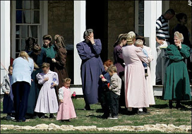
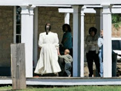

"The dragon stood in front of the woman who was about to give birth, so that he might devour her child the moment [he] was born. " (Rev. 12:4b)*
Even before Dan Jessop's son was born, the State had already made a proprietary claim to him because of the supposed sins of his parents.
I say "sins" because as of yet, neither 24-year-old Dan Jessop, Sr., nor his 22-year-old wife Louisa, has been charged with a crime.
This didn't prevent the instrument of totalitarian malice called the Texas Department of Child Protective Services from trying to seize control over both the child and his mother as soon as delivery was accomplished.
The Jessops were granted a restraining order preventing the abduction of their child, but given the depraved resourcefulness of the CPS the Jessop family remains in danger.
With incorrigible dishonesty comes great tactical flexibility, particularly if the incorrigible party is permitted to ignore the rules, as is the case with the CPS.
Louisa is one of the "disputed minors" -- FLDS women who were originally described by the CPS as underage mothers, despite the insistence of church members and their legal counsel that they were married women of legal age. In many cases, according to FLDS spokesmen, the CPS refused to accept legal documentation establishing the age of the "minor" women in question. Of course, it was the CPS that created the "dispute" by refusing to accept the documents.
In some circumstances, the CPS told women they had to "admit" being minors in order to remain with their children. Now that at least some of those women have been able to prove, to the satisfaction of the CPS, that they are of legal age, will the agency claim that the earlier deception -- you know, the same one abetted by the CPS -- somehow illustrates that they aren't suited to be mothers?
Lest one think the CPS isn't capable of such double-jointed deceptiveness, we must remember the sworn testimony of CPS official Angie Voss, who justified the seizure of the children because the YFZ Ranch was such a "scary environment."
What made it so "scary"?
Well, according to Voss, "I heard a report that a tank was coming on the property.... It was a situation of a very huge magnitude with so many law enforcement officers around."
She insisted that removing the children from such an environment by force was necessary so that they could be "interviewed" in a setting that wasn't "so scary and dangerous."
Of course, It was the CPS and its allies in "law enforcement" that created the "scary and dangerous" environment that, Voss said, justified the removal of the children.
Soooo.... anytime the State decides to attack a religious community (and business of that kind seems to be picking up lately), the very willingness of the government to carry out such an attack proves that such a community is an unsuitable environment for children.
This is a bit like a robber saying that the existence of wealth justifies burglary -- but worse: Wealth once lost can be regained, but children are irreplaceable.
Joseph and Lori Jessop are another FLDS couple who sought an emergency injunction against the Texas CPS to protect their son, Joseph Jr. Both Joseph Sr., 27, and Lori, 25, are certified Emergency Medical Technicians. Although the practice of "plural marriage" is widely practiced in the schismatic Mormon sect to which they belong, the Jessops are monogamous. They have three children -- four-year-old Zina Glo, two-year-old Joseph Edson, and Joseph Steed Jr., who turns one year old on Thursday.
The CPS had made plain its intention to celebrate Junior's first birthday by kidnapping him. They have already laid their violent and criminal hands on the couple's other children and refuse to let the parents know where they have been sent. The infant has been imprisoned in a children's home in San Antonio; both parents have relocated there to be near their youngest child. All of their children suffered terribly in the squalid children's shelter in San Antonio, where they were held immediately after being taken from the YFZ Ranch.
All of their children are being held by CPS without a court order of any kind. The couple produced the proper documentation -- birth certificates and suchlike -- to CPS before their children were removed from the Ranch. This deterred the child thieves not one whit.
Former Nueces County district judge and trial lawyer Rene Haas is representing the parents in filing a writ of habeas corpus to end the unlawful detention of their children. Three other monogamous FLDS fathers -- James Dockstader, and Rulon and Leland Keate -- have filed a separate habeas corpus petition demanding that they be reunited with their kidnapped children.
So far, they have succeeded in obtaining an injunction, but they've not been reunited with their children. It will be of paramount interest to learn, a year and a half after the Bush Regime effectively killed habeas corpus as a protection against federal abuses, if the Great Writ retains any power to redress abuses of power at the state and local level. I'm not optimistic.

The Texas CPS, like its analogues in other states, is an entity of truly Lovecraftian evil. Surely that description fits an agency that could send kidnappers to sit -- poised and all but salivating -- in wait for a child to be born, or an infant to celebrate his first birthday, in order to steal the youngster from the arms of loving parents who have done nothing wrong.
Previously in this space I've made reference to reports filed by nine mortified mental health workers who had been assigned to aid CPS workers in dealing with the captive FLDS children. Those reports are now publicly available, and they should precipitate both criminal and civil action against those responsible for the atrocity committed by the CPS and Texas law enforcement at El Dorado.
One of the claims made by the CPS is that their efforts to "investigate" the supposed claims of child abuse were thwarted by a "conspiracy of silence" on the part of the FLDS mothers, who reportedly have a deeply ingrained hostility toward outsiders. We were told that the mothers were uncooperative, evasive, intransigent. In fact, it was the CPS that frustrated efforts at communication between the health care workers and FLDS mothers who were eager and willing to talk.


"When first arriving at Ft. Concho in San Angelo we were debriefed about `the guests' at the fort," recalls one health care professional. "During the debriefing I learned that these women and children ... would likely not talk to us, make eye contact with us, and that they were brainwashed. Within the first two days of being among the women and children from El Dorado, I learned through observation and interactions that the initial information we received was false.... These women had excellent parenting skills; the children interacted with the mothers and other adult women with respect..... The women carried themselves with confidence; they were polite and respectful; they displayed what we would consider a great deal of self-esteem."
According to another witness, any attempted brainwashing that took place was carried out by CPS:
"We were told before we ever saw these women that they would not talk with us [and that] they would only respond to us with, `You will have to talk to my lawyer.' This was an absolute lie and it was to `brainwash' MH [Mental Health workers] to think like CPS. I never heard [the demand to] talk to my lawyer once while I sat and talked and played with the children. Everyone was polite and nice but very upset and confused. They were gracious and tried very hard to not be afraid and nervous."
That account is confirmed by another worker:
"We were told [at a briefing held shortly after the mental health care workers arrived] not to expect any of them to engage with us, and if by chance they spoke to us it would be to tell us to speak with their lawyers. We were told that even the children were directing all outsiders to contact their lawyers."
In fact, the health care personnel were actually told that the FLDS mothers and children -- who belong to a fastidiously clean-living subculture -- should be treated as if they carried acutely infectious diseases:
"At one point I headed toward the public restroom and was immediately grabbed by the arm by a CPS worker who told me to use the port-a-potties outside the rock wall, `because we don't know what kind of diseases these people might have and we don't want to catch anything from them.'"
Elsewhere, notes this witness, "CPS workers were openly rude to the mothers and children, yelled at them for trying to wave to friends and family members in surrounding shelters, threatened them with arrest if they did not stop waving to others, continually reminded them that the women ... could be made to leave if they did not cooperate, threatened the mothers with never seeing their children again if they did not cooperate, and ignored requests for anything."


The threats and contempt directed by CPS officials at the mothers were part of an aggressive program of full-spectrum mistreatment. In dealing with the captive children and mothers, CPS employed nearly the entire arsenal of standard cult tactics -- such as deception, information control, isolation, prolonged physical stress, psychological coercion:"The women and children were placed in barracks built in 1800 with no air and no indoor plumbing, 80 women and children on cots side by side, even pregnant ladies; [the mothers were] separated from older children (12 and up) for days and not even allow[ed] to wave at them across the open field, [and] told they would never see them again if they continued to wave [as well as being threatened with] jail for waving at them; [There were] constant reminders that the adult women were only guests and that there were not in charge of the children [and that the children] belonged to CPS now and they could talk, interrogate, separate and treat them any way they wanted.... [Women and children were] not allowed to talk to the outside world. Women were constantly lied to about their children's whereabouts and when they could see their lawyers and when they could be reunited with their children.... The more uncomfortable they were the more CPS thought they would talk."(Emphasis added.)
That last line implicates CPS in what has to be considered an act of mass child torture -- "enhanced interrogation techniques," to employ the phrase used by both the Bush Regime and its Nazi antecedent, employed against captive children.
"If this had happened in another country, our government would have tried to prevent it! Old films of concentration camps came to mind," exclaimed one commendably outraged health care worker, whose faith in the moral sensibility of our rulers is as touching as it is misplaced.
"I heard some people wonder out loud if this was Nazi Germany," recounts another health care volunteer. "The thought had struck me, too. Is this what it was like for the people in concentration camps in Germany? ... I often felt helpless...."
This is happening right now, in real time, right here.

Are we helpless, or merely content to act as if that were the case?
It is heartwarming to know that there are at least some Texas judges who recall a quaint instrument called the US Constitution, and dimly remember some of its provisions. But CPS has already abundantly and redundantly displayed its consummate indifference to the Constitution and the law.
Attorney Gregory Hession, who specializes in dealing with CPS abuses (which means that he enjoys a thoroughly regrettable form of job security), points out that as long as the Child Thieves have custody of their prey, nothing else matters -- not the Constitution, not the law, not rudimentary human decency. The people employed by that entity exist in a State of Nature in which disputes are settled through deception and coercion, not through reason and mutual submission to the law.
The Texas CPS, having conducted a criminal assault that resulted in the kidnapping of hundreds of children, simply cannot permit the law to prevail. They will keep the children they've stolen until they're quite literally forced to relinquish them to their parents.
FLDS fathers have done a wise and rational thing by taking the CPS to court. It's appropriate to exhaust the legal alternatives. But once that's been done, they -- and those of us who care about due process, individual liberty, and the sanctity of parental rights -- will inevitably confront the unpleasant question Jim Malone posed to Elliot Ness in The Untouchables: After you've done "everything within the law," and your antagonist has proven to have no similar compunctions, what are you prepared to do then?
__
*Obviously, I don't mean to suggest that the FLDS episodes I relate above are to be taken as a fulfillment of that prophecy in any sense.
 Available now!
Available now!Dum spiro, pugno!
24 comments:
........when they burned up the Waco children I didn't say anything, I wasn't a Branch Davidian, when they stole the FLDS children I didn't say anything............and when they came for me nobody was there to say anything.
Looks like the third way hybrid of national socialism and communism is coming into being right on schedule. Nothing is made here anymore so we can game the system by having one half of the sheep spy on the other half. Security state bureaucracy can be the other great cash cow. We killed the golden goose taxpayers already. They are busy working 72 hours a week for some bullsh1t lifestyle. Ohh and the kids veee must keep them safe ja?, veee know what is best for der kinder errr children.
Obituary
By Frank Silva
14/05/08 "ICH " -- -Today we mourn the death of the United States of America. America died today at the age of 231, just fifty-one days short of her 232nd birthday. With America dies Democracy, Liberty, Individual Rights, the Constitution, the Bill of Rights and Freedom as they all came to be known in the glorious years after America was born on July 4th, 1776. Although it is clear that America did not die of natural causes, no cause of death was released. Authorities also report that despite America’s death, upcoming elections will be held as scheduled and in the interest of those elections no autopsy would be conducted. Some scholars and historians have said, however, that no autopsy is needed. They indicated that America clearly died of the burden of national debt, the stress of trade imbalance coupled with the demise of manufacturing, the inequity of Class divisions, and most of all from the heartache of the loss of her dearly departed Middle Class. Adding to America’s ill-health and decline were the erosions of vital internal organs including limited executive power, healthy legislative functions, justice, checks & balances, transparency, compassion, and, of course, journalism, which through an independent democratic media made America’s heart continue beating strong and kept her mind sharp and focused throughout most of her life. Unfortunately for America, both heart and mind declined rapidly in recent decades.
Scholars and historians again say the blame for this lays squarely on the corporate take-over of America’s vital functions that in the end became so infected and spread so quickly that nothing could be done. In her final days America had been on life support, but that remained unknown to the public even as late as yesterday when a White House briefing proclaimed America healthy and as strong as an ox. And last night, taking a cue from the White House, Fox News did an in-depth report on the health and vitality of America in anticipation of her upcoming birthday. Fox News stands by their story today even as reports of America’s death are confirmed.
With her death America leaves behind the grieving mothers, widows and other loved ones of all the brave soldiers killed in all her noble wars since the declaration of our independence, through the disagreement of our house divided against itself and through the reuniting of our great Union. America also leaves behind those self-evident truths that are no longer self-evident or, apparently, true. Many people do not realize that all men were not created equal; all men were created equal some years after the United States of America was born and remained equal only for a few short years of her life. But as America aged and was finally placed in a nursing home, shortly after Ronald Reagan’s first inauguration, all men once again became unequal and America’s health started to decline. America’s finest hour was her fight against Fascism, once thought to be her greatest victory, which turned out to be, in the end, what finally consumed and killed her. America also leaves behind 299,700,000 tired, poor and huddled masses yearning to breathe free. She will be sorely missed.
No services are planned for America due to the ongoing presidential election campaigns but in a statement released by the White House it was reported that America will be interred in Halliburton Park, formerly known as Arlington National Cemetery, between Sam Walton, founder of Wal-Mart and the ashes of what are believed to be Ken Lay, former CEO of Enron.
"With incorrigible dishonesty comes great tactical flexibility, particularly if the incorrigible party is permitted to ignore the rules, as is the case with the CPS."
Will, there are no rules within the so called family court system. You and I live in Idaho where where we have the Idaho Administrative Procedures Act (most states have something similar) which empowers bureaucratic agencies of many stripes to act totally outside of the review of any court - it is up to the aggrieved party to mount a case at great expense against the state and it's unlimited resources.
The following link is to an article which speaks to the very nature of the lawlessness of the family courts (CPS is simply the enforcement arm):
http://www.thepriceofliberty.org/07/10/22/terri.htm
What you are seeing with the FLDS has been increasing since the late 90's because federal funds are incentive to the states to behave in such a manner.
Anyone even remotely associated with the family courts/CPS/H&W - I wouldn't piss on them to put it out if they were burning up in a fire . . .
"[the mothers were] separated from older children (12 and up) for days and not even allow[ed] to wave at them across the open field, [and] told they would never see them again if they continued to wave"
The only reason I can conceive of for this is that they are telling the children that their parents don't love them any more, and use the lack of waving as evidence to the children.
While these peaceful, God-fearing families are being militarily assaulted by the government, the government (Judiciary) just announced the sanctioning of homosexual "marriages" - If ever there was/is a nation deserving of God's wrath and destruction, it is America, I'm sorry to admit.
Without question, hell and the Lake of Fire was meant for those responsible who directed, executed and aided and betted in these crimes against humanity. Hitler and the European Nazis didn't escape damnation, nor did Stalin and the communist tyrants - and neither will any of these.
NO ONE WILL ESCAPE GOD'S JUDGMENT AND WRATH OUTSIDE OF THE CROSS OF HIS SON - And no one with a godly conscience could participate in such evil and live with themselves.
I am NOT Mormon - they're theology and doctrines are antithetical to the genuine Judeo-Christian Faith. HOWEVER, I/WE owe them a duty of care to defend their Constitutional GOD-GIVEN INALIENABLE RIGHTS to live their lives, raise their children and practice whatever faith they hold, PERIOD!
This attack is not simply on FLDS - THIS IS A DIRECT ATTACK ON ALL AMERICANS, just as Pastor Neimoller's immortal words attest.
WHERE ARE THE CHURCHES AND "CHRISTIANS" DEFENDING THE GOD-GIVEN RIGHTS OF THESE PEOPLE OF FAITH, REGARDLESS OF WHEHTER THEIR FAITH IS NOT OUR FAITH?! Who will defend Christians when they come for us (AND THEY ARE COMING FOR US JUST THE SAME!)?
Doubt this statement? READ about the ongoing attack on a CHRISTIAN CHURCH in Michigan:
http://www.worldnetdaily.com/index.php?fa=PAGE.view&pageId=58665
The hour of tyranny and darkness is upon us - WHERE ARE THE AMERICAN PATRIOTS TO RISE UP AGAINST SUCH OPEN TYRANNY AND EVIL ON OUR OWN SOIL BY OUR OWN GOVERNMENT?!
Where is the ACLJ (Christian Law Center) and the Rutherford Institute and other Christian Legal organizations?
I'm dissiminating this report to all RON PAUL PATRIOTS, news organizations and everyone I know.
JOIN THE RON PAUL REVOLUTION AND DEFEND OUR CONSTITUTIONAL REPUBLIC BEFORE IT'S TOO LATE! LONG LIVE LIBERTY. LIVE FREE OR DIE!
I agree with Frank Silva, but your date is wrong.
The Obituary should be dated 1972 when the smallest but most significant persons of our society were sentenced to death through 'Roe'.
Until we restore their (the babies) rights, America is dead.
I am personally willing to be part of any effective movement to accomplish that goal.
Now, they can be wearing all black, boots, carrying sturmgewehren, wearing coal-scuttle helmets, and taking children from their mothers, but they're not evil or tyrannical until they're wearing swastikas on their arms. And speaking a foreign language.
-Sans Authoritas
Mr. Grigg,
You are to be commended for keeping this story going because it is otherwise fading into yesterday's obscurity.
Keep fighting the good fight.
Rumours of America's demise might be a bit premature but 4 more years of Bush/Clinton crime family rule might be the nail in the coffin. Ever see the photos of Poppy (Opium) Bush and Slick Slimy Willie interlocking fingers and flashing big grins? They are laughing at us the schleps, the golden gooses, the trough fillers. The founding fathers warned us of all these things, dynastic families hogging the levers of power, banking families taking over monetary policy, placing nations over others in trade & treaty, the danger of astronomical debt, the danger of good intention busy bodies who know what's best for you, the danger of wartime unitary executives, the danger of standing armies which are one day turned on the populace. Like the old saying goes, "nothing new under the sun." Divide and conquer is an ancient trick as well. The jews, latinos, indians, french, arab muslim, chinese, people of african heritage, (insert race scapegoat here) are not the enemy. The blood sucking vampire bankers, careering politricks as usual politicians and the clique of corporate criminal c*!$suckers that run things are the enemy, and they are not the smartest guys in the room but they have the best mind control propaganda and know how to use it. Lenin made the comment once of victory by slogans and they use that one very well. Witness people parroting save the planet carbon footprint tripe for proof of this. Lenin also made a comment about society could go in 1000 different directions but the sheep must never know this.
There is little, if any, outcry from the rest of the country on this crime simply because members of the FLDS religion are viewed as "strange" and "outside the mainstream of society". As a member of what you might call the "mainstream" LDS church, how long will it be before they come for MY children?
I do not know what is taught in the FLDS church in regards to a scenario such as this, but it has never been the teaching of my church to allow our families to be victimized in this way. Most would say "trust the system", but it is more than obvious that CPS, and the elements of the government they represent, have no interest in fairness, truth, or justice.
It IS taught in my religion that my family is a blessing given to me by God, and that it is the responsibility of my wife and myself, as parents, to see to the security and education of our children. I also do not recall any teachings of the Savior commanding His children to sit idly by while their enemies victimize them.
Therefore, in accordance to my understanding of the teachings of Christ, my understanding of my responsibilities, and my overwhelming need and desire to protect my family from criminal activity regardless of its source, ANY agency, organization, or invividual who attempts to perpetuate such an attack on my family will have death and destruction visited upon them in an exceedingly swift and brutal manner.
It is my opinnion that any parent not willing to go to these lenghts to protect THEIR OWN CHILDREN, is guilty of the most aggregious form of cowardice that I can immagine.
to anon 2.44:
Your savior taught that if someone strike you, you are to turn the other cheek, that he may strike you again. Nowhere in the KJV did he ever authorise the use of force by his believers, not even to defend themselves or anyone else. Isaiah: Vengence is mine, saith the Lord. I will repay. more later
Doc Ellis 124
I have linked to this at my blog, thank you for your observations, Mr. Grigg.
Please everyone, take action through your Washington, D.C. representatives and senators -- ask for - demand -- federal intervention. Email Governor Perry and let him know the rest of America is watching him shred the Constitution, which he took an oath to uphold. Email or fax the President. The only way anything will happen is if enough people make noise about it! For the sake of the children, please.
Mr. ellis,
Your interpretation of the scriptures could not be more wrong.
anon 10.30: document your case, or go home.
this continues from 5.19
You are in the world, not of it. Your savior authorised you to preach the gospel to every creature. He did not authorise you to act to right the wrongs of the world, nor even to compel non-believers to live by his rules. Not only are believers constrained from self-defence (Luke 6:28) they are even constrained from defending any one else (Matthew 26:51, Luke 21:51, John 18:11).
If state employees, appointed by God,(Romans 13:1-4, I Peter 2:13) choose to remove and slay your offspring, they are only obeying your savior by suffering the little children to come to him(Matthew 19:14, Mark 10:14-15, Luke 18:16-17.)
Remember, only those who are as little children can enter the kingdom of heaven.
Your Lord for whatever reason, has delegated to the Prince of Darkness
the task of managing the world until such time as he chooses to remove him from his office. (Luke 4:6)
You, by your proclamation that you would use deadly force to prevent your children from being sent home to be with the Lord, are obviously placing the welfare of your blessings above your obligation to obey the will of God.
You claim that your religion teaches that you are responsible for your offspring's care. Am I to understand that you need to be told what your responsibilities entail? Am I to understand that if your religion demands that you sacrifice your young to the service of others, that you would?
I think you need to rethink your presentation of you opinion.
Doc Ellis 124
alaskagain 9.18:
you're kidding about bringing in the Feds, right?
Doc Ellis 124
Document my case?
Doc, you appear, in all respects, to be an intelligent, literate, and thoughtfull individual. Having said that, I generally do not do another's research for them. My beliefs and opinnions may not be shared by all and I am fine with that. But do not dismiss me as someone who's positions have not been arrived at through exhaustive research, soul searching, and a lifetime of thought and prayer. I do not justify my beliefs to anyone.
Your points are well made. I simply do not subscribe to the same doctoral interpretations as you. I do not believe the Lord intended His followers to be pacifists in the face of their enemies and there are scores of scriptural passages which illustrate this. Forgive me if I do not list them here. Certainly, you are as aware of as many as I am. Probably more since I have never claimed to be a scriptorian.
Having said that, however, we, as Christians, should never be the aggressor in conflict but I believe that should conflict be brought upon us, it is our very solemn duty to use whatever means necessary to repel the threat. I can see no more justified use of force than the protection of our offspring.
Anon 5.08: It appears that you and I have accepted the principle of self-government. I have no problem with using lethal force to defend myself or another. My point is that there is no need to use religious justifications to advance the case for self-defence, a right you posses as a matter of course.
For a better treatment of my position see William Paul's article in the May 17-18 edition of LewRockwell.com. Entitled "Thou shalt not kill for government".
Doc Ellis 124
"If state employees, appointed by God,(Romans 13:1-4, I Peter 2:13) choose to remove and slay your offspring, they are only obeying your savior by suffering the little children to come to him(Matthew 19:14, Mark 10:14-15, Luke 18:16-17.)"
Well...Joseph & Mary sure didn't wait around for Herod's social workers to show up at their door. They took their kid and beat it.
anon 8.53:
1/ true 2/what's your point? 3/is this conversation on-topic? if not, seeme at my danceofthefuries blogspot.
(note:I'm not very bright. you have to explain things to me. my favorite word is duh?)
Doc Ellis 124
Doc Ellis 124
12:21 PM
As far as the feds go, it's not that I want to see troops going into foster homes and retrieving the kids -- double the trauma on that one.
At a minimum, I would like to see the Senate investigate this situation in particular, and the abuse of power by states' child/family agencies in general.
It would at least feel good to hear a federal level politician stand up and say "It looks like rights have been violated here, at least insoafar as the original search warrant goes." Even it they continue with the blah blah of "Let's watch Texas, and let the process continue."
alaskagain 7.24: I love your sense of irony. You want to ask people for whom organised sports are important to investigate the behaviour of government employees who kidnapped children. That is so cute.
Doc Ellis 124
I am personally ashamed of the behavior of our government. But, we allow it and that is even more shameful.
If you want to see the true obstacle of freedom, look in a mirror.
Ron
onedollardvdproject.com
First of all mr Griggs it wasn't San Antionio the children and mother's were taken to!
San Antionio is 150 miles from El Dorado and the Ranch.
They were taken to San Angelo, to a historic landmark called Fort Concho, which is actually a lovely place. It has been restored, and yes although its not living quarters, it was large enough for for the the begining influx of children and mothers.
They were moved seveal days later to a larger facility, the coliseum.
Instead of posting a newspaper article, it would of have been nice if you had posted the Court Document of Questioning in court of Angie Voss and others.
Its online.
Post a Comment